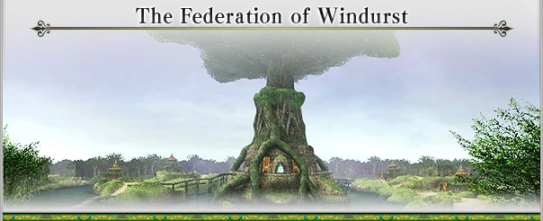
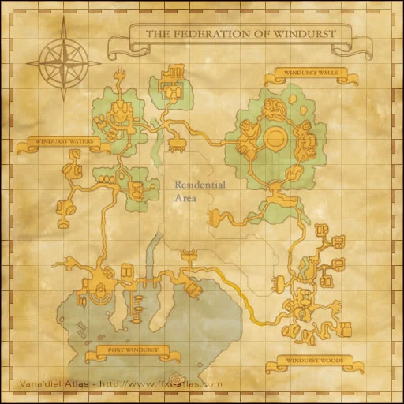

Level 75 reference · Zenith rules





Tribes of Tarutaru from the sweeping grasslands and neighboring islands of southern Mindartia united to form this league of states. It is governed by a council of representatives from the five ministries of magic, legacies of the five founding tribes. Their decisions are based on the prophecies of the mystic Star Sibyl who resides in the fabled Heavens Tower. In one section of the city live the Mithra, a race of natural hunters whose skills have brought a new source of wealth to Windurst.
The capital, Windurst City, was razed in the war twenty years ago, but this prominent center of learning has since been restored to its former glory.
Windurst is surrounded by the vast fields of West Sarutabaruta and East Sarutabaruta, a wild grassland home to many unique species of plants.
Areas
Port Windurst, Windurst Walls, the North and South sections of Windurst Waters, Windurst Woods
Culture
A highly advanced form of magical energy is used in many aspects of Windurstian life. The doll-like Cardians and brightly glowing fluoro-flora are just a few examples of this power put to practical use. Industry in Windurst also includes the refinement of bronze, but the use of metallic substances is generally not favored.
The individual cultures of the Tarutaru and Mithra tribes are respected and treasured, and evidence of this can be seen in every area of the city.
Living Standards
The Federation of Windurst was the hardest hit by the ravages of the Great War, but with the assistance of the Mithra, the damage has been completely repaired. Tarutaru culture is far from materialistic. In relation to the Tarutaru's small size, their residences are spacious and comfortable. The city always has an abundance of food; Tarutaru magic enhances crop yields, and the Mithra use their hunting and fishing skills to keep the markets overflowing with meat and fish.
Climate
The environment surrounding Windurst does not receive large amounts of precipitation, but nevertheless features numerous rivers and streams. The warm climate has encouraged the Tarutaru to grow a wide variety of crops, which they cultivate and harvest with the help of magical techniques. Many of these crops are exported to other countries.
Tarutaru farmers also raise rabbits known as "Rarabs," while the Mithra in Windurst Woods raise towering Dhalmels. This livestock provides Windurst with a source of milk, meat, and leather.
Military Organization
The Federation Forces of Windurst are led by a Warlock Warlord, chosen once a year from the Parliament of Patriarchs, and consist of twelve brigades of War Warlocks and four brigades of Mithra Mercenaries.
The War Warlocks
The body of the Federation Forces is comprised of twelve brigades. Each brigade is led by a Master Caster, who is advised in strategy and command matters by several Wise Wizards. The actual fighting is carried out by the eight Caster Companies, each headed by a Caster Captain who commands thirty veteran soldiers known as Combat Casters. A Caster Company is further reinforced with one hundred Cardians controlled by a group of Tactician Magicians. Combat Casters must undergo several grueling testing procedures before being accepted into the War Warlocks, so their level of expertise in the magical arts is exceptionally high. While the number of War Warlocks is relatively low, their power can turn the tide of a battle.
Mithra Mercenaries
A mercenary organization comprised chiefly of Mithra. There are four brigades in the Mithra Mercenaries, and, unlike other nations, they are not a permanent part of the Federation Forces. The free-spirited Mithra, despite being the central element of the army, did not wish to become a regimented force; the Mithra selected to choose the looser structural organization of a mercenary force. The Mercenary Major has several Mercenary Companies under her command, but this number can rise or fall depending on the hunting season. Each Mercenary Company is led by a Mercenary Captain, with around one hundred mercenaries assigned to each company. These companies are often joined by an extra fifty or so Freeswords, inexperienced soldiers that come under the tutelage of the veteran mercenaries.
Patriarch Protectors
A unit charged with the protection and security of the various ministries and the Parliament of Patriarchs. For the sake of security, their numbers and equipment have not been made public, though the unit is thought to hold close to one hundred members.
Sibyl Guards
An elite unit of Mithra soldiers, created after The Great War to protect the Star Sibyl. This shrowded in mystery troop is not officially part of the Windurst military and only answers to the Star Sibyl. Its members are picked amongst the Mithra of Windurst, however their numbers are unknown as they rarely leave Heaven’s Tower, though they are believed to be relatively few, as only the best of the best are picked. The Sibyl Guards evoke mixed feelings among the local Mithra tribes - for some, to be accepted in that elite unit is the ultimate recognition of their hunting and archery skills. Others consider The Sibyl Guards to have "lost their way" as they were "raised by Tarutaru" and thus are not true Mithra. Despite the controversy, there are rumours that the Sybil Guard Commander - Semih Lafihna will become the next Tribal Chieftainess of the Windurst Mithra tribes.
Total:
War Warlocks: ~ 3200
Cardians: 10 000
Mithra Mercenaries: several thousand
Patriarch Protectors: ~ 100
Sybil Guards: ?
Adapted from Eden Wiki: Category:Windurst · Contributors and history · CC BY-SA 4.0. Revision 45588. Layout, links and optional background text adapted for Zenith.